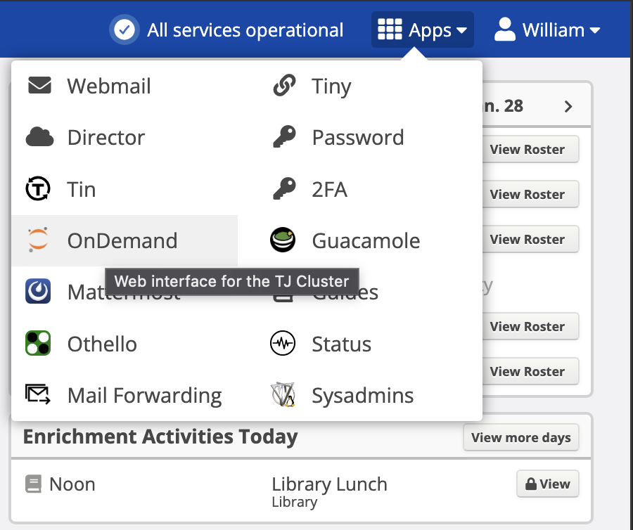
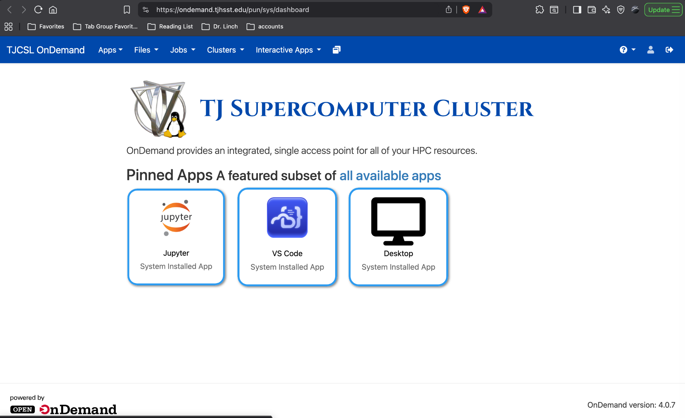
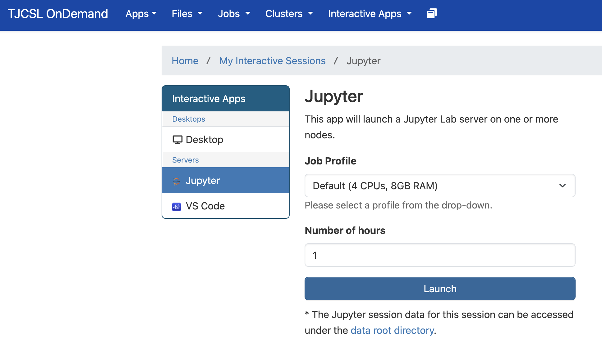
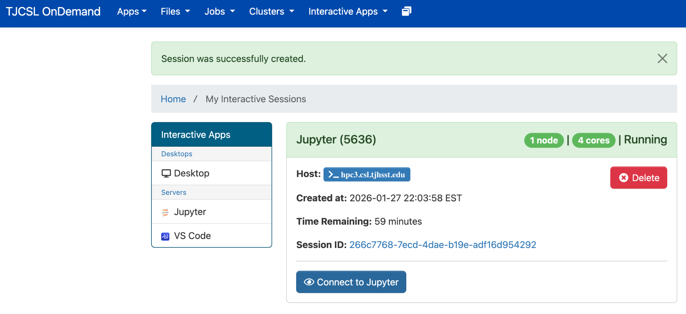
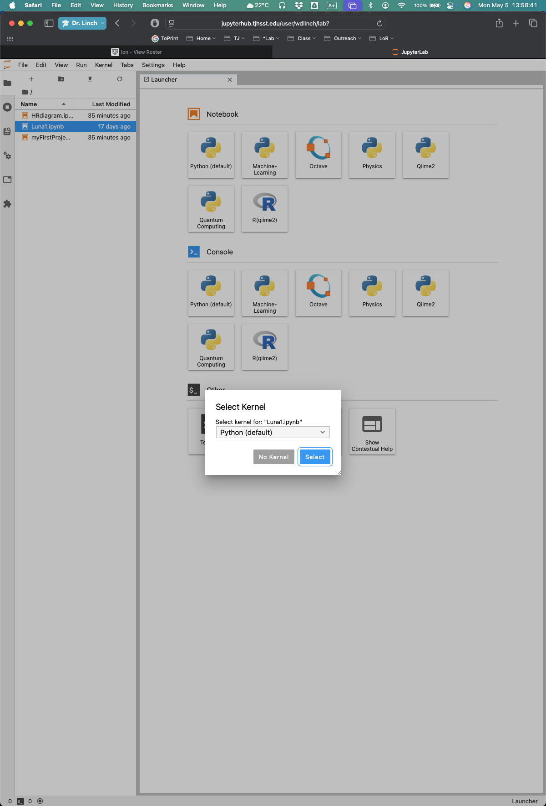
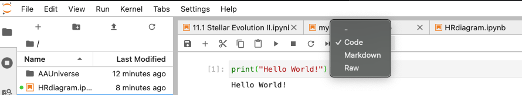
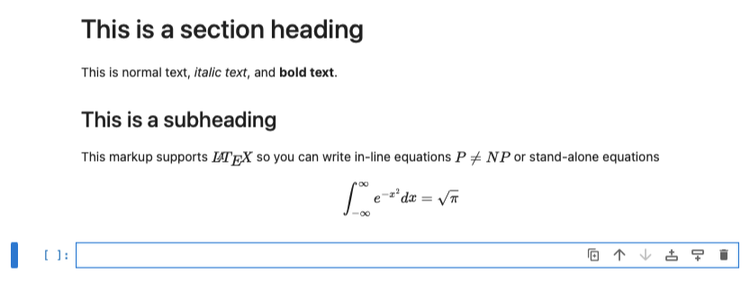

A practical introduction to the notebook workflow used in Advanced Astronomy.
In Advanced Astronomy, many packets live in Jupyter notebooks. That means the work is not divided into separate places for writing, equations, and computation. Instead, a notebook combines three things in one document:
Markdown
For ordinary writing, headings, lists, emphasis, and scientific explanation.
LaTeX / MathJax
For equations and symbols written in the standard notation used in science and mathematics.
Python
For calculations, plotting, quick models, numerical checks, and reusable scientific tools.
The point is not to turn every astronomy student into a software engineer. The point is to give students one place where they can
explain, calculate, and typeset clearly.
Why we use notebooks in AA
Jupyter is a better fit for this course than trying to split the work across ordinary word processors, equation editors, separate calculators, and plotting tools. Markdown is fast to write, LaTeX-style math looks the way scientific notation is supposed to look, and Python gives you a calculator, a plotter, and a scientific workbench in the same file.
No prior experience with Jupyter, Python, or LaTeX is assumed. You are not expected to arrive already knowing these tools.
First troubleshooting check: if something that used to work suddenly fails - especially imports - first check whether the notebook is connected to the aa_class kernel.
How to get started on ION
Log in to ION and open the applications menu (the “waffle”).
Select OnDemand.
From the interactive applications, choose Jupyter.
Launch a session. For ordinary work, one hour is often enough to start.
Wait for the session to become available, then click Connect to Jupyter.
When JupyterLab opens, select the aa_class kernel.

From ION, open the applications menu and choose OnDemand.

OnDemand gives access to interactive applications such as Jupyter.

Launch a Jupyter session from the interactive applications page.

Once the session is ready, use “Connect to Jupyter”.

When JupyterLab opens, choose the aa_class kernel.
Your first notebook actions
Once the notebook is open, there are two very basic things to know:
Code cells run Python.
Markdown cells hold ordinary writing and equations.
A simple first code cell is:
print("Hello World!")
Press Shift+Enter to run the cell.
Then switch a cell from Code to Markdown and try something like this:
# This is a section heading
This is normal text, *italic text*, and **bold text**.
## This is a subheading
This markup supports $\LaTeX$ so you can write inline equations like
$P \neq NP$
or stand-alone equations like
$$
\int_{-\infty}^{\infty} e^{-x^2}\,dx = \sqrt{\pi}
$$

Change a cell from Code to Markdown when you want writing rather than Python.

After Shift+Enter, the Markdown cell renders as formatted text and equations.
What students are expected to do in these notebooks
In a typical AA notebook, students are expected to do some mixture of the following:
write clear scientific explanations in Markdown
typeset equations cleanly using LaTeX notation
perform calculations in Python rather than by repeatedly typing everything into a separate calculator
reuse earlier work when it is sensible, such as constants, simple helper functions, or plotting code
show reasoning, not just final numbers
The notebook is meant to become a scientific workspace, not just a place to dump answers.
Common beginner mistakes
Forgetting to switch to the aa_class kernel.
Typing Markdown into a code cell and then wondering why Python throws an error.
Typing Python into a Markdown cell and wondering why nothing runs.
Forgetting that Shift+Enter both runs the current cell and moves onward.
Forgetting to save after making progress.
Trying to do every calculation by hand when a short Python cell would be clearer and easier to check.
Using the notebook as a final-answer sheet instead of as a record of reasoning.
What to try first when something breaks
Check the kernel: is it really aa_class?
Read the exact error message rather than guessing.
Make sure the current cell type is correct: Code or Markdown.
Run the earlier cells that define imports, constants, or helper functions.
Save the notebook, then restart and rerun if the state seems confused.
If a file is missing, make sure you actually uploaded it to the correct folder in JupyterLab.
Good rule of thumb: when something fails, do not immediately rewrite everything. First check the kernel, the cell type, and whether the notebook has been run in a sensible order.
Why this becomes useful very quickly
At first, a notebook can feel like one more thing to learn. Very quickly, however, it usually becomes easier than bouncing back and forth between a word processor, an equation editor, a plotting website, and a calculator. Once you have a few useful notebook habits, each packet becomes less tedious and easier to revise.
You are also building a transferable workflow: the same general notebook habits are useful well beyond this course.